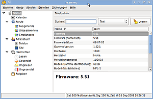

Wammu
Dieser Artikel wurde für die folgenden Ubuntu-Versionen getestet:
Ubuntu 16.04 Xenial Xerus
Zum Verständnis dieses Artikels sind folgende Seiten hilfreich:
Wammu  ist eine graphische Oberfläche für das Kommandozeilen-Programm Gammu. Es bietet viele Möglichkeiten zur Synchronisierung und Verwaltung von verschiedenen Mobiltelefonen (hauptsächlich Nokia).
ist eine graphische Oberfläche für das Kommandozeilen-Programm Gammu. Es bietet viele Möglichkeiten zur Synchronisierung und Verwaltung von verschiedenen Mobiltelefonen (hauptsächlich Nokia).
Funktionen (abhängig vom Handy-Modell; siehe Gammu Phone Database ):

Kontakte, Aufgaben und Kalender lesen, bearbeiten, löschen und kopieren.
Kurzmitteilungen (SMS) lesen, erstellen, speichern, senden, sichern
Dateien an ein Telefon senden (nur via OBEX und mit Sony Ericsson Handys)
Verfasser für mehrteilige Kurzmitteilungen (momentan nur Text und Bearbeitung vordefinierter Bilder/Audio)
Zeigt Nachrichten (auch Bilder und Klingeltöne)
Sicherheitskopien und Importe in zahlreichen Formaten (vCard, vCalendar, vTodo, iCalendar, Gammu-Backup, ...)
Nachrichten → eMail exportieren (unterstützte Protokolle: IMAP4, maildir und mailbox)
Suche nach Telefonen
Installation¶
Zur Installation wird folgendes Paket benötigt [1]:
wammu (universe)
 mit apturl
mit apturl
Paketliste zum Kopieren:
sudo apt-get install wammu
sudo aptitude install wammu
Benutzung¶
Nach erfolgreicher Installation kann man Wammu bei Ubuntu-Varianten mit einem Anwendungsmenü über "Zubehör → Wammu" starten [2]. Die Konfiguration der Verbindung zu einem Mobiltelefon kann mit einem grafischen Assistenten erfolgen oder manuell in den Einstellungen geschehen und ist dann analog zu der von Gammu. Für Infrarot genügt das Aktivieren der Infrarotverbindung im Handy und das Positionieren neben dem konfigurierten Infrarotanschluss am Rechner [3]. Bluetooth muss ebenfalls aktiviert werden und das Handy gepaart werden [4], für eine Kabelverbindung muss dieses lediglich eingesteckt werden.
- Erstellt mit Inyoka
-
 2004 – 2017 ubuntuusers.de • Einige Rechte vorbehalten
2004 – 2017 ubuntuusers.de • Einige Rechte vorbehalten
Lizenz • Kontakt • Datenschutz • Impressum • Serverstatus -
Serverhousing gespendet von